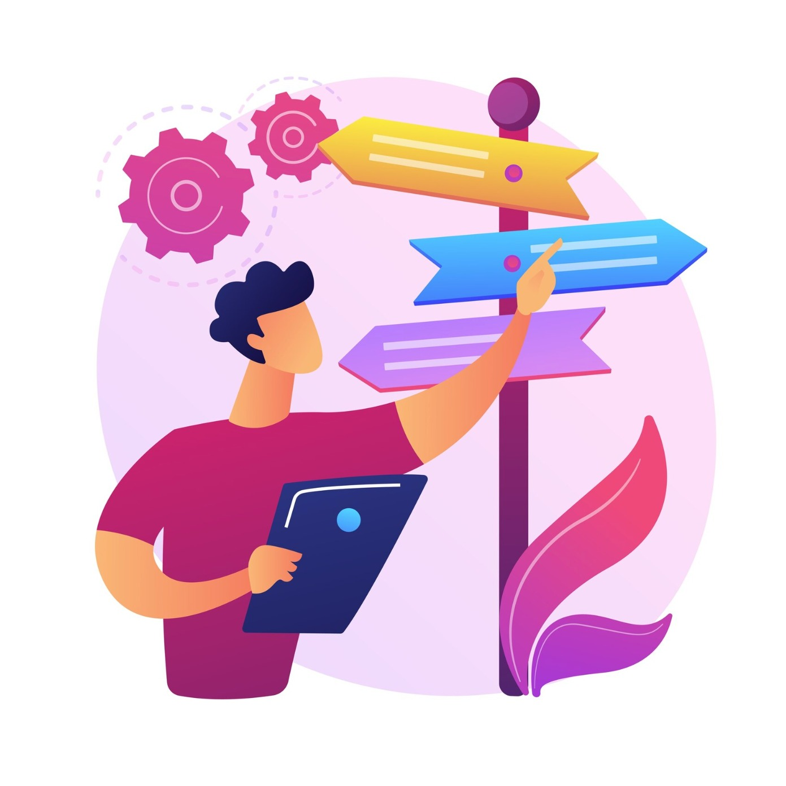

A roadmap is a visual plan that outlines the steps necessary to achieve a specific goal. It acts as a guide, showing the path from a starting point to a desired destination.

1. Provides Clarity and Direction
A roadmap helps break down a complex goal into smaller, manageable steps. This gives a clear sense of what needs to be done and in what order, helping avoid confusion or distractions.
Example: If you're learning web development, a roadmap will show whether you should learn HTML before moving to JavaScript or React.
2. Improves Focus and Motivation
Having a roadmap keeps you focused on your goals. As you progress through each milestone, you experience a sense of accomplishment, which can boost motivation and confidence.
3. Helps Track Progress
With defined stages or checkpoints, a roadmap allows you to measure how far you’ve come and what still needs to be done. This helps in adjusting timelines or strategies if necessary.
4. Supports Better Planning and Resource Allocation
A roadmap helps in estimating time, effort, tools, and resources needed at each stage. This leads to better decision-making and time management.
Example: In a software project, a roadmap may show when to hire additional developers or start testing.
5. Enhances Communication and Collaboration
In a team setting, a roadmap serves as a shared reference. Everyone understands the timeline, goals, and responsibilities, which reduces misunderstandings and improves coordination.
6. Identifies Risks and Dependencies Early
By mapping out each step, a roadmap helps you foresee potential roadblocks or dependencies. This allows for proactive problem-solving instead of reacting to issues too late.
7. Aligns Goals with Long-Term Vision
Whether for a personal project or an organization, a roadmap keeps short-term actions aligned with long-term objectives. It ensures that daily efforts contribute toward a bigger picture.
In summary, a roadmap is a powerful tool for strategic planning. It acts as both a "GUIDE" and a "MEASURING STICK" helping you stay organized, make informed decisions, and successfully reach your goals.